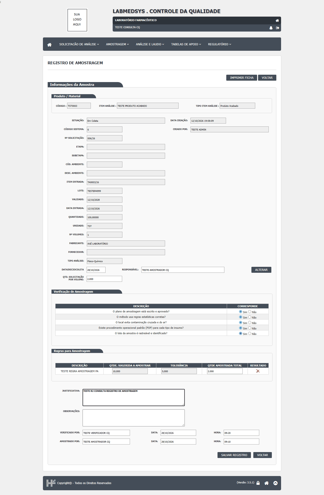
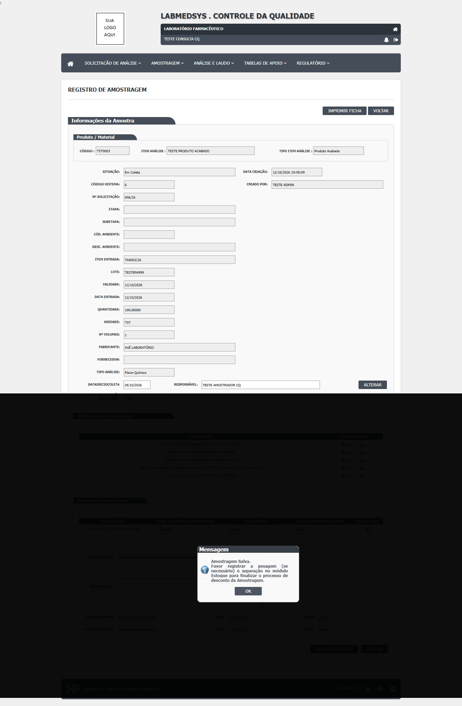
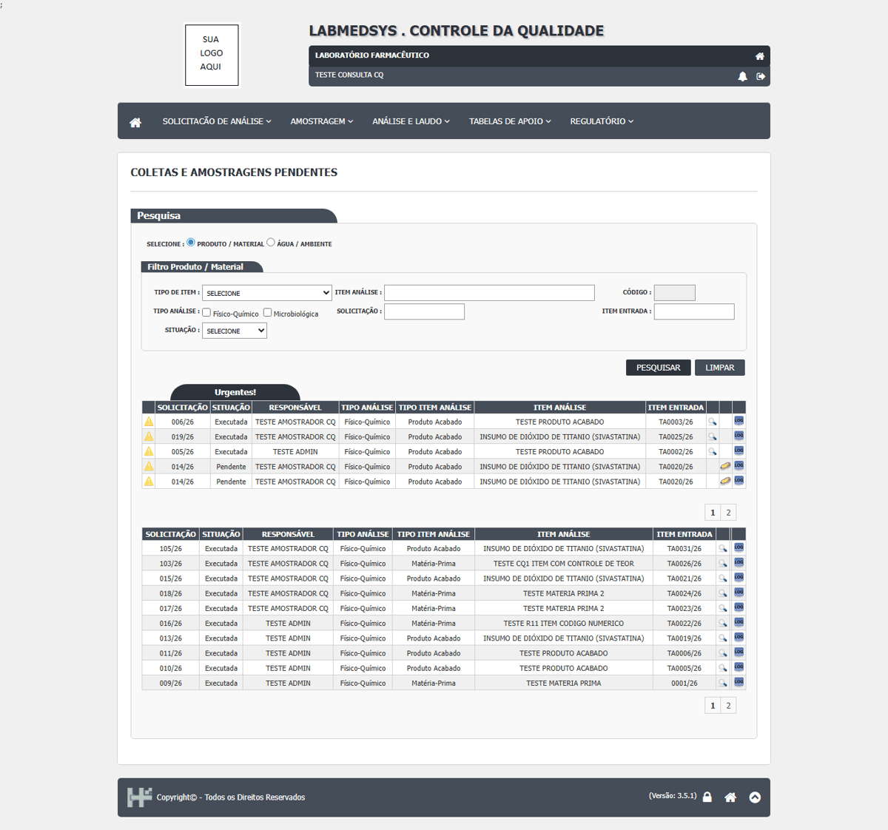

DV-CQ-032 · Perfil só de consulta registra amostragens
O usuário só de consulta registrou a amostragem da 006/26 (verificador, amostrador, datas, quantidade e checklist) e a da 1027/26 (ambiente). A tela de registro não tem filtro de autorização (SEG-CQ-01).
Como reproduzir o erro, passo a passo
- Entrar com o perfil só de consulta.
- Abrir Amostragens Pendentes Visão Administrador, Editar (registrar) a 006/26, preencher e Salvar Registro.
Esperado
Recusar a gravação (e esconder o botão) para um perfil que só tem a consulta da tela; registrar a tentativa.
Obtido
"Confirma a operação?" e "Amostragem Salva. Favor registrar a pesagem (se necessário) e separação no módulo Estoque..."; a 006/26 passou a Executada. Na 1027/26: "Ocorreu um erro interno não esperado." e gravada (DV-CQ-019).
Evidência (captura da tela)



DV-CQ-045 · A ficha de amostragem impressa sai sem o amostrador, o verificador e a data da amostragem, e traz a quantidade da solicitação no lugar da amostrada
A ficha de amostragem impressa (012/26 e 006/26) traz o checklist de cinco perguntas, o lote, a validade, o registro e os volumes, mas não traz o nome do amostrador nem do verificador, a quantidade amostrada nem a data da amostragem. A "Quantidade" impressa é a da solicitação (100,00000 na 006/26), enquanto a amostragem registrou 2. Fabricante e nota fiscal saem em branco, e só há linhas de "Recebimento" e "Amostragem" para assinar à mão. O registro eletrônico da amostragem tem esses dados; a saída impressa não os leva.
Como reproduzir o erro, passo a passo
- Abrir Consultar Amostragem e registrar uma amostragem TESTE (por exemplo a da solicitação 006/26, quantidade amostrada 2) com amostrador, verificador e data.
- Imprimir a ficha de amostragem pela própria tela.
- Conferir no PDF o amostrador, o verificador, a quantidade amostrada e a data da amostragem.
Esperado
A ficha impressa traz quem amostrou, quem verificou, a quantidade realmente amostrada e a data e hora da amostragem, para que a folha de papel seja um registro rastreável.
Obtido
A ficha sai sem amostrador, verificador e data da amostragem; a quantidade impressa é a da solicitação (100,00000), e não a amostrada (2); fabricante e nota fiscal em branco; só linhas para assinar à mão.
Sem captura de tela registrada para este defeito.